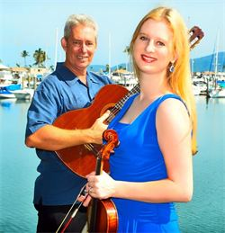

Upcoming Concert
Sunday Variety Concert

Presented by Friends of the Theatre
- Time: 2pm
- Date: Sunday 26 April
- Place: Pimlico Performing Arts Centre Fulham Road
- Phone: 4723 7879
Harbourside Duo
presents Dream Serenade
Music of Debussy, Ravel, Saint- Saens, Sibelius and others.
March into Sommarhagen!
Dance the Habanera with the Girl with Flaxen Hair!
Be seduced by Thais!
Or just relax and let the music wash over you.
2pm Sunday 17 May at C2 (Townsville Civic Theatre)
Aviva String Quartet

Following the phenomenal success of their 2014 season, the superb foursome return with their first concert for 2015, bringing their signature style of classical and modern music to the masses in their own fresh and entertaining style.
featuring
Caroline Lloyd-Doolan on violin
Susan Fraser on violin
Jessica Winton on viola
Ivy Wu on cello
Ticketshop link 2pm Sunday 14 June at C2 (CivicTheatre building)
$25 Adult - $20 Concession - Children 12 and under free!
The superb foursome return with their final concert for 2015, bringing their signature style of classical and modern music to the masses in their own fresh and entertaining style.
featuring
Caroline Lloyd-Doolan on violin
Susan Fraser on violin
Jessica Winton on viola
Ivy Wu on cello
2pm Sunday 29 November at C2 (Townsville Civic Theatre)
Townsville Concert Band

Sunday 28 June
- Time : 2pm
- Place: C2 (Townsville Civic Theatre)
Sunday 27 September
- Time : 2pm
- Place: C2 (Townsville Civic Theatre)
Alleggro Choir

Date : Sunday 22 November
Time : 2pm
Place: C2 (Townsville Civic Theatre)
Pimlico choir
Date : Sunday 6 September
Time : 2pm
Place: C2 (Townsville Civic Theatre)